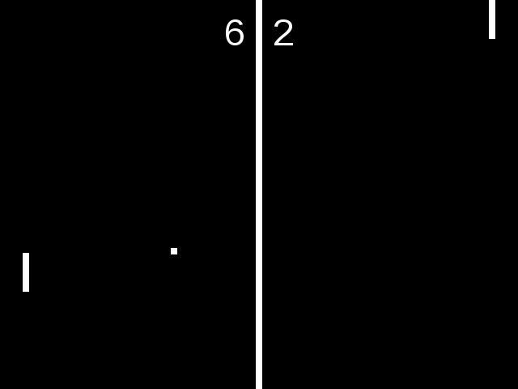

Home
The Seclusion Game Engine ("SGE", pronounced like "sage") is a general-purpose open source 2-D game engine for Python. It takes care of several details for you so you can focus on the game itself. This makes more rapid game development possible, and it also makes the SGE easy to learn.
The SGE originated as a sub-project of a program called "Stellar" under the name "Stellar Game Engine". It was then called the "SGE Game Engine" (a recursive acronym) before temporarily being orphaned. When we decided to resurrect the project later on, we renamed it to the "Seclusion Game Engine", playfully named after its own obscurity and as a subtle pun on the way "SGE" is pronounced (like a sage secluded in the mountains).
The SGE is not as featureful as more powerful engines like Godot Engine, but it is designed to be a fairly powerful and easy to use engine. Some of the built-in SGE features include:
- Window size management: Windows are scaled automatically based on certain parameters to achieve a particular window and view size, ensuring consistency.
- Collision detection: A direction-based collision system is included which, while not as advanced as physics engines and the like, offers a good amount of flexibility.
- Parallax scroling: Parallax scrolling is a very easy and highly configurable built-in feature, supporting any number of layers which can be made up of plain images or tiles.
- Image transformation: Rotation, scaling, and blending with all major blend modes are standard image manipulation features.
- Split-screen views: Multiple views can be created to easily enable split-screen play.
- Delta timing: Delta timing is automatic, allowing the game to lower the frame rate as needed to prevent slowdown (down to a minimum frame rate), and also allowing the game to speed up to a faster frame rate if enough CPU time is available. Delta timing is fully configurable and can be disabled if desired.
- Transitions: Built-in support for several kinds of transitions between rooms (game areas), including fade, dissolve, pixelate, wipe, matrix, and iris transitions.
In addition, xSGE provides a set of extensions for the SGE. The following xSGE packages are available:
- xsge_gui: A simple lightweight widget toolkit for use with SGE games.
- xsge_lighting: Allows basic lighting effects in any mix of colors.
- xsge_particle: Implements an emitter class and stock particle types for easy particle effects.
- xsge_path: A path class for defining movement along a path, with configurable speeds.
- xsge_physics (beta): A basic physics framework supporting unisolid walls, slopes, and moving platforms in an easy manner.
- xsge_tiled: Enables easy loading of the JSON format of the Tiled Map Editor, which is useful for editing levels and such.